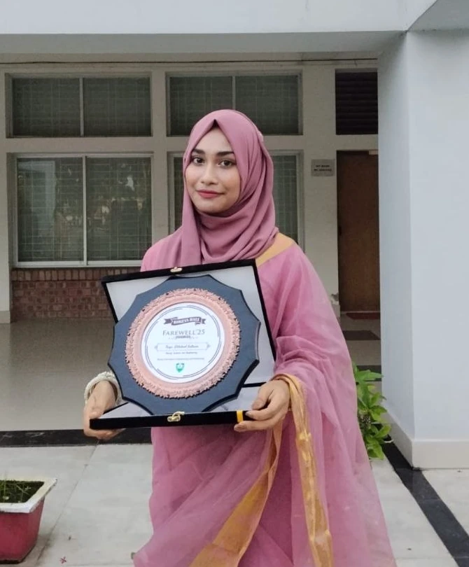

Dilshad
Sultana.
Energy Science & Engineering · KUET · Bangladesh
Researching better energy futures. An engineering foundation, a research mindset, and a direction toward renewable integration.
Introduction
A curious mind.
An engineering lens.
Academic foundation
Built on the fundamentals.
Driven by what’s next.
Research direction
The questions that
keep me curious.
My current interests build on undergraduate research while moving toward energy networks, renewable integration, and intelligent power systems.
Selected work
Ideas explored.
Systems examined.
Experimental studies, energy modelling, and hands-on projects—presented with the question, the approach, and what was learned.
Click a project
to explore the details ↘
Research writing
Work in progress.
Shared with integrity.
Submission and manuscript statuses are clearly distinguished from peer-reviewed publications.
Publication status is updated manually. Submitted or under-review work should not be interpreted as accepted or published.
Experience and engagement
Beyond the
classroom.
Leadership · industry · work
Training · exposure
Technical toolkit
Tools for analysis.
Skills for making.
Recognition and activities
The work around
the work.
Connect · Collaborate · Research
Let’s make
something matter.
Interested in energy engineering research, graduate opportunities, and thoughtful collaborations. I would be glad to hear from you.
Send an email ↗